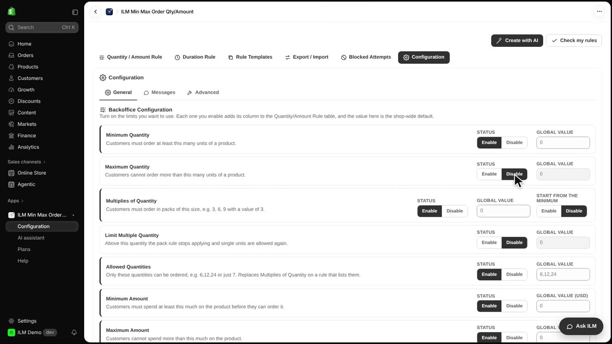
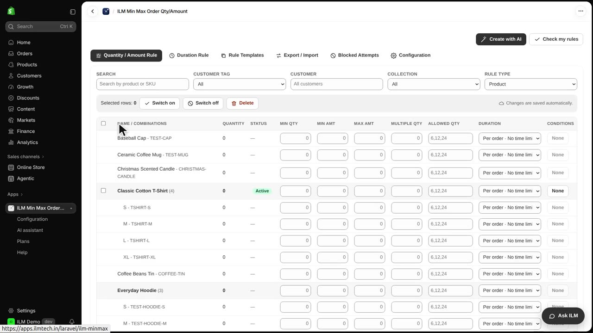
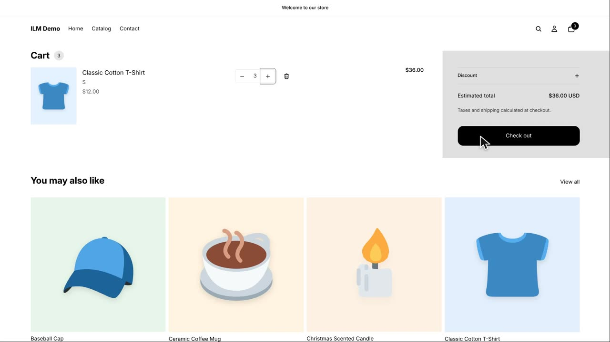
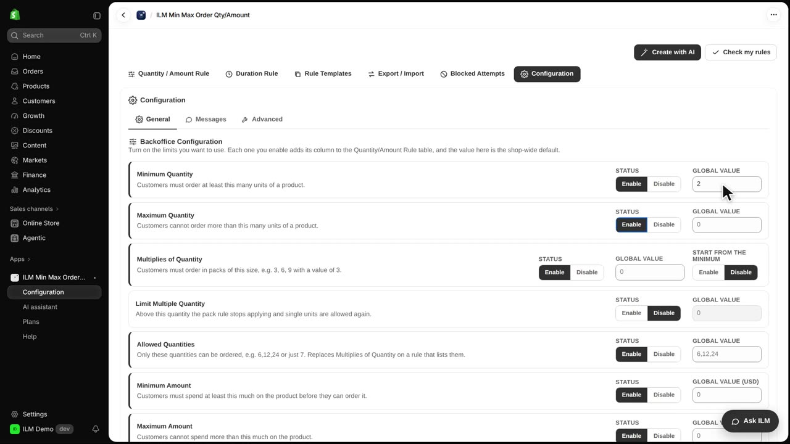
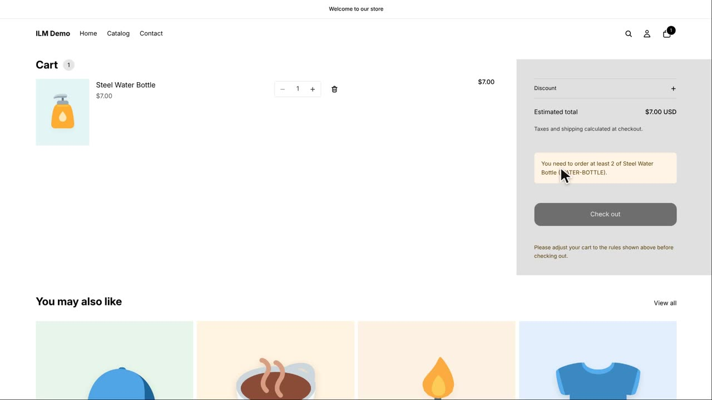

Every limit on the General page has two extra controls: a Status and a Global value. The Status lets you switch a whole limit type off for the entire store without deleting any rules, and the Global value gives every product a default limit when it has no rule of its own. Today we will disable the maximum quantity limit so the Classic Cotton T-Shirt can be bought in larger amounts, then set a global minimum so even products with no rule, like the Steel Water Bottle, still have a floor.
The Classic Cotton T-Shirt currently has a product rule with a maximum of two. In the storefront cart, when the shopper tries to set the quantity to three, the app refuses it and shows the limit message.
Now open the Configuration tab in the app. Find the Maximum Quantity card and set its Status to Disable. This turns off maximum quantity checking for the whole store at once, while all the individual maximum rules stay saved in the background.

Back on the Quantity / Amount Rule tab, the Max Qty column has disappeared from the rule grid. That is because the maximum limit type is disabled, so the app no longer shows or enforces any maximum values. The rule itself is not deleted, it is just paused.

Return to the cart and set the Classic Cotton T-Shirt quantity to three again. This time it is accepted, and the shopper can continue to checkout. If you ever re-enable the Maximum Quantity status in Configuration, the old maximum of two comes straight back into effect.

Now go back to Configuration and re-enable the Maximum Quantity status, then type two into the Minimum Quantity global value field. This global value is a default minimum that applies to every product that does not have its own minimum rule. Products with their own rule keep their own value instead.

Add a single Steel Water Bottle to the cart. This product has no rule of its own, but because the global minimum is two, the cart now shows a notice that at least two are required.
